Bimnox
Set up a job once, let it run every week.
- C#
- .NET Framework 4.8 / .NET 8 / .NET 10
- Revit API
- WPF
- Autodesk Platform Services
- Windows Task Scheduler
Architects and engineers keep their designs in Revit models. Every week someone has to open dozens of them, check them for errors and save copies in the formats other teams need. Bimnox does that on its own. You pick the models and the tasks once; it runs them every week and puts the results in one folder.
The problem
Everyone agrees model checks and deliverable exports matter. Nobody has time to run them by hand on dozens of models every week, so they get skipped.
What it does
Bimnox (BIM Nightly Orchestration and eXport) is a desktop program plus a helper that runs inside Revit without a window. It can do seven tasks in one pass: an Autodesk Model Checker run, IFC and NWC exports, PDF and DWG exports of the sheets, a model health report and a report of what changed. It starts the right installed Revit in the background, opens each model once, runs everything you picked and closes it again without saving.
Models can come from four places: selected models in Autodesk Construction Cloud (ACC), a whole ACC folder, a folder on your computer or network, or a fixed list of files. Folders are read again on every run, so new models get picked up, and the results can go back up to ACC.
The second run is the cheap one. If a model hasn't changed since the last good run, Bimnox skips it. Everything lands in one output folder with a history workbook for Excel and Power BI, and a Teams message after each run if you want one.
The same code also builds three single-task apps, each with its own name and icon, for teams that only need one job: Bulk Model Checker, IFC Bulk Export and NWC Bulk Export.
I first built scheduled checks and exports like this in 2023. Bimnox is the version I'd want to inherit: nothing depends on someone remembering.
Features
- Seven tasks in one pass: Autodesk Model Checker, IFC export, NWC export for Navisworks, PDF and DWG export of sheets, a model health report and a change report
- Each model is opened once for all tasks and closed again without saving
- Four kinds of source: selected ACC models, an ACC folder, a local or network folder, or a fixed list of Revit files
- Folders are read again at every run, so models added later are included
- Works with every installed Revit from 2023 to 2027; each model opens in a version that can read it, and older models are upgraded in memory only, never saved
- Weekly runs through the Windows Task Scheduler, even while the program is closed
- Works with ACC in both directions: models are downloaded for the run, and the exported files and reports can be uploaded back
- Skips a model when its source, settings and results have not changed since the last successful run
- PDF of every sheet, of a sheet set saved in the model, or of sheets whose numbers match a pattern; one PDF per sheet or one per model
- Model health report per model: warnings, families, CAD imports, links, views, groups and rooms
- Change report: the elements added, deleted and changed since the last report
- A time limit per model: a model that hangs is closed and reported while the others carry on
- One output folder (a SharePoint library synced with OneDrive works), a history workbook for Excel and Power BI, and a Teams message after each run
- Three single-task versions from the same code, each with its own name and icon: Bulk Model Checker, IFC Bulk Export and NWC Bulk Export
- German and English interface; installs per user without admin rights
Terms on this page
- BIM
- Building Information Modelling: designing a building as a shared 3D model that also holds data about every part, instead of separate drawings.
- Revit
- Autodesk's main software for designing buildings as BIM models. Most architects and engineers use it.
- Navisworks
- Autodesk software that combines the models of all disciplines into one and checks them for clashes.
- Family
- A reusable Revit component, such as a door, a window, a chair or a light fitting.
- Sheet
- A drawing page in Revit, ready to print or send out.
- ACC / BIM 360
- Autodesk Construction Cloud, an online platform where project teams store and share models and documents. BIM 360 is the older version.
- IFC
- An open file format for building models that any BIM software can read. It is maintained by buildingSMART.
- NWC
- The file format Navisworks uses to bring in Revit models.
- DWG
- The standard file format for CAD drawings.
- Autodesk Model Checker
- A free Autodesk tool that checks Revit models against a list of rules and writes a report.
- Power BI
- Microsoft's software for interactive charts and dashboards.
See it
Screenshots & demos
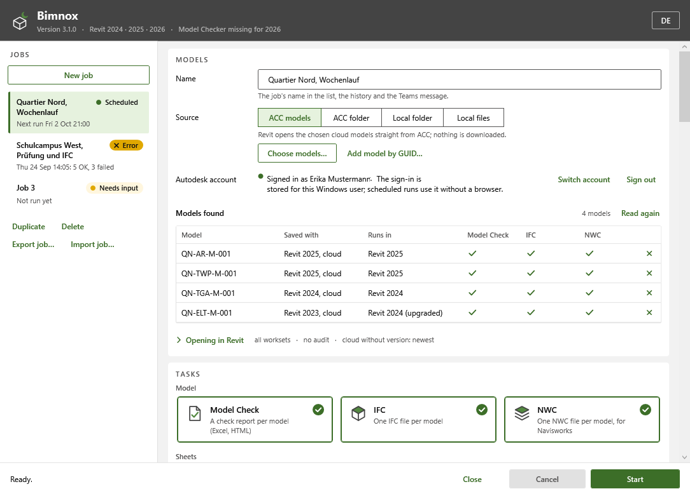
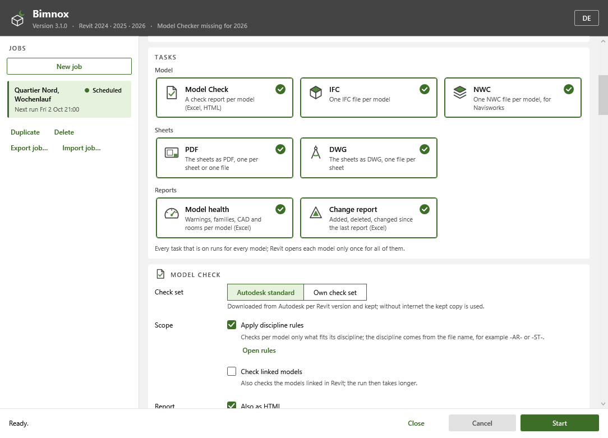
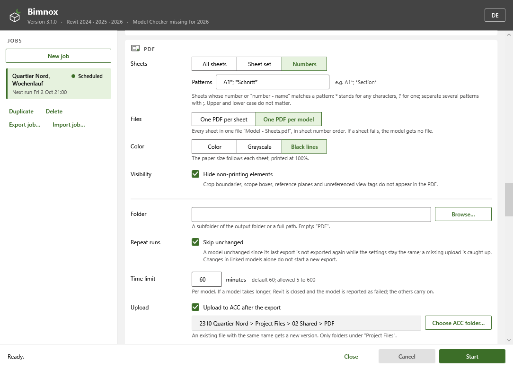
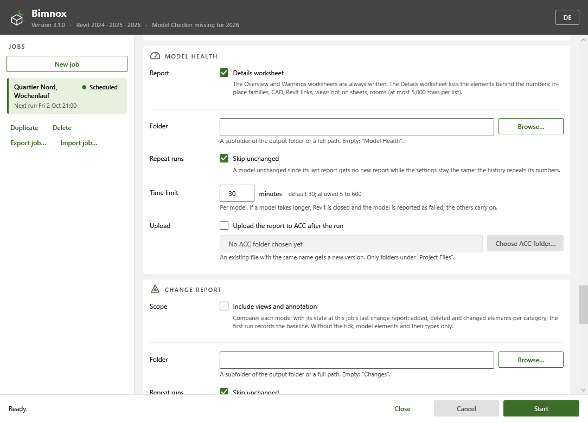
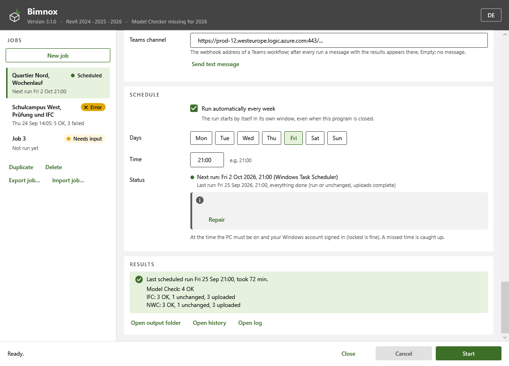
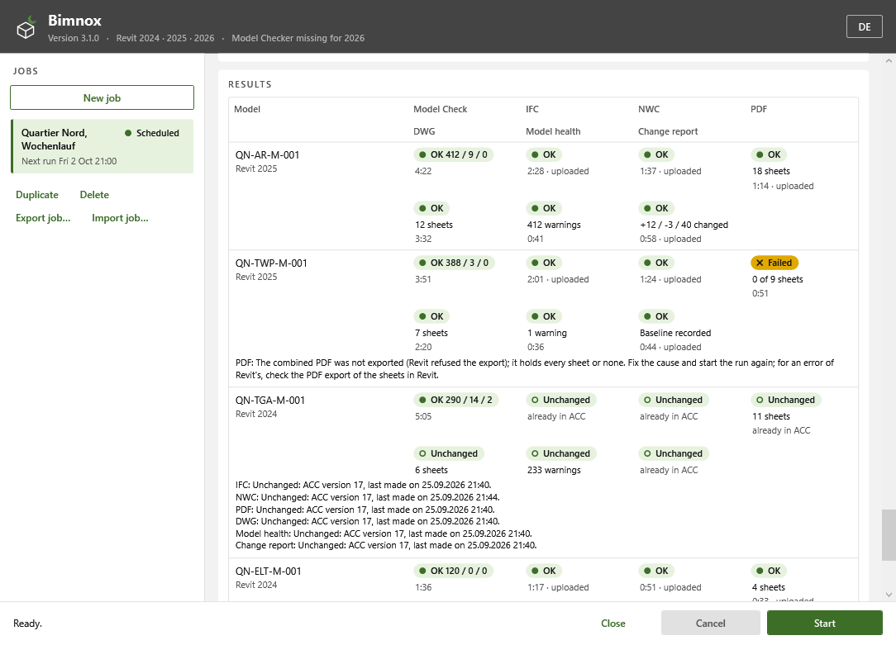
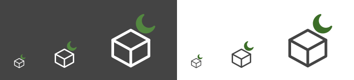
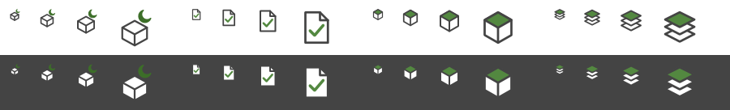
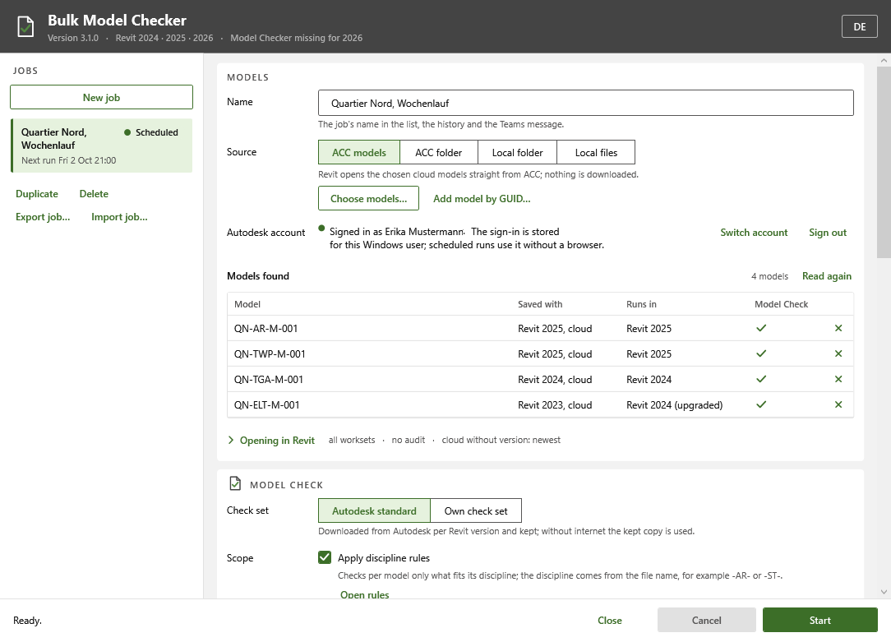
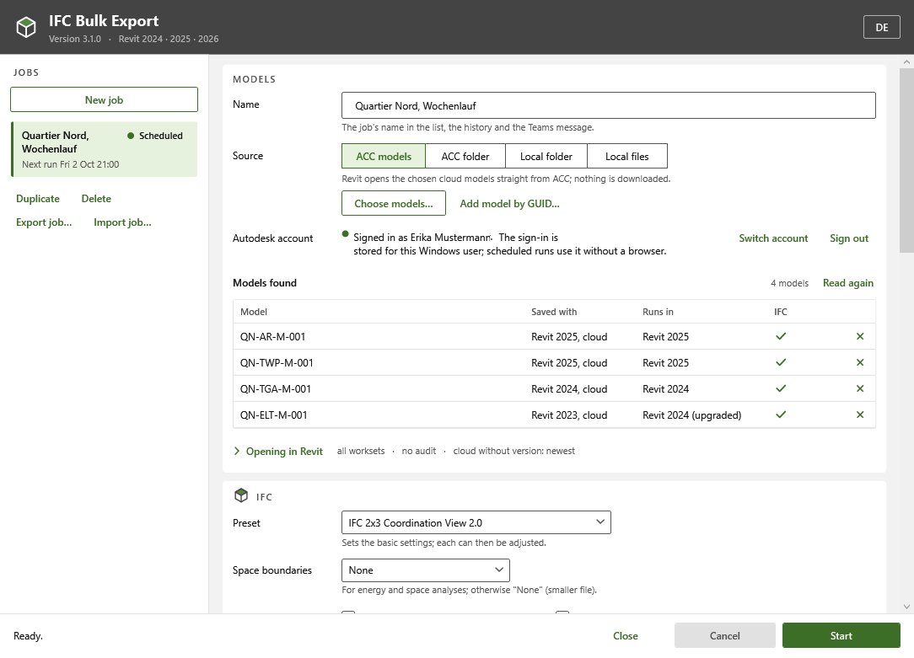
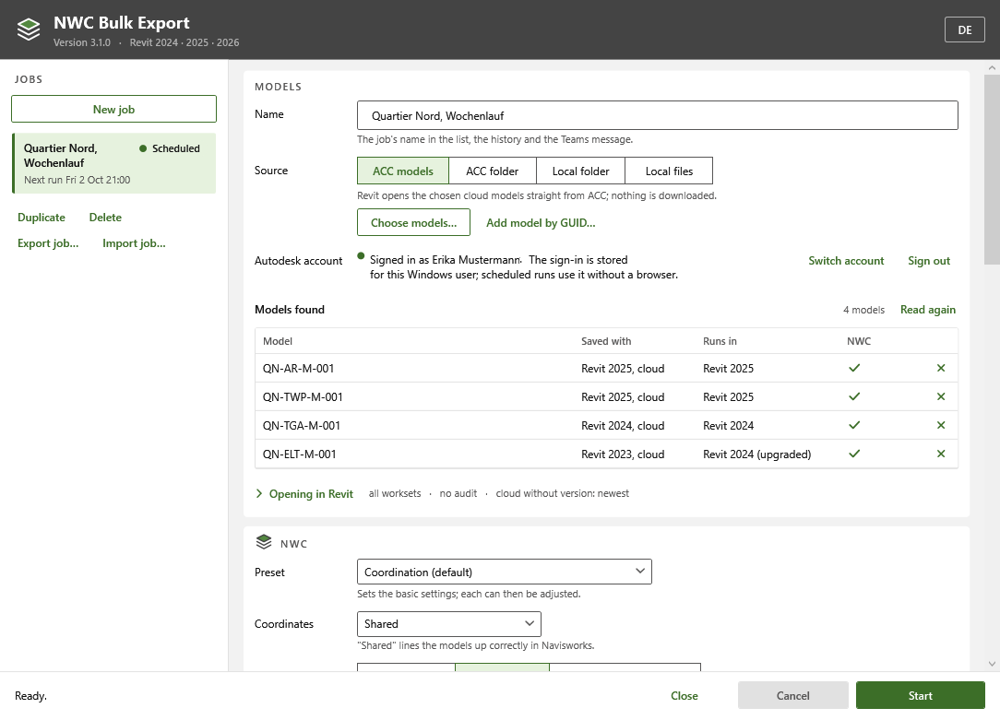
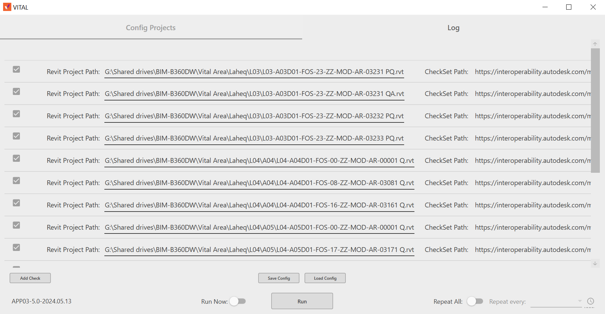
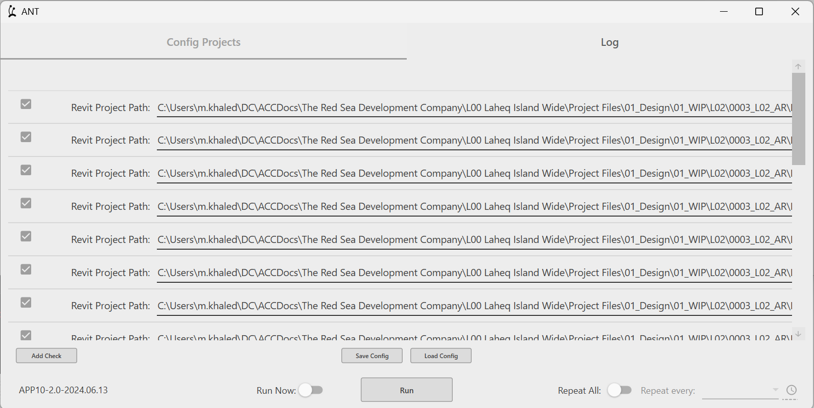